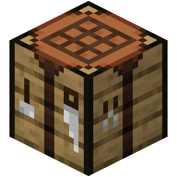
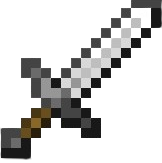
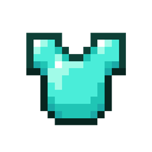
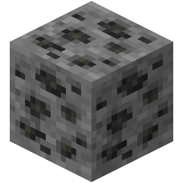
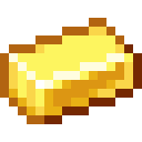
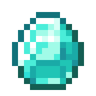
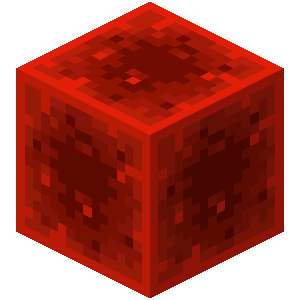
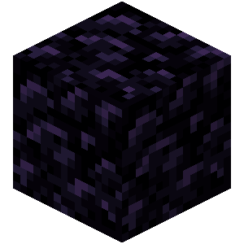

Blocos Importantes
Os blocos são a base de tudo: terra, pedra, madeira, minérios (carvão, ferro, ouro, diamante), redstone (usada para circuitos) e obsidiana (resistente a explosões). Com eles você constrói ferramentas, armaduras e estruturas.